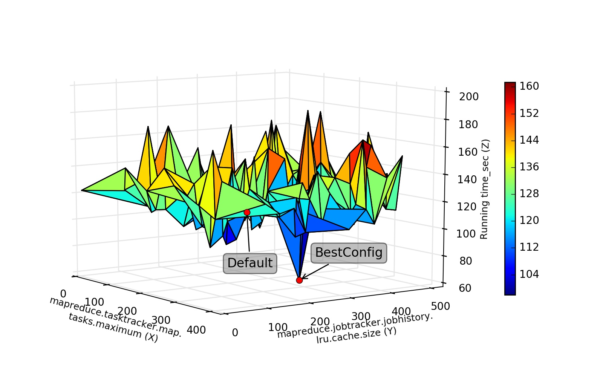

1. BestConf for Hadoop + Hive¶
1.1. Experimental Settings¶
We executed Bestconf for the Hadoop cluster with 4 nodes. The Hadoop cluster consists of 1 master node and 3 slave nodes. All nodes used in our experiment are shown below.
| Node | OS | CPU | Memory |
|---|---|---|---|
| Master | CentOS | 16 Intel(R) Xeon(R) CPU E5620 @ 2.40GHz | 32GB |
| Slave 1 | CentOS | 16 Intel(R) Xeon(R) CPU E5620 @ 2.40GHz | 32GB |
| Slave 2 | CentOS | 16 Intel(R) Xeon(R) CPU E5620 @ 2.40GHz | 32GB |
| Slave 3 | CentOS | 16 Intel(R) Xeon(R) CPU E5620 @ 2.40GHz | 32GB |
1.2. Performance Surface¶
We use HiBench that is a widely adopted benchmark tools in the workload generator for Spark to generate the target workload. Figure 1 plot the highly differed performance surfaces for Hadoop+Hive Join workload.
The performance surface of Hadoop+Hive under Hibench-Join workload
1.3. Test Results¶
The test results of Hadoop under Join workload hadoopJoin.arff.
The test results of Hadoop under Pagerank workload hadoopPageRank.arff.
The test results of Hadoop under Join workload with 500 samples join-trainingBestConf.arff and join-BestConfig.arff.
1.4. Interface Impl¶
The source files of HadoopConfigReadin and HadoopConfigWrite implement the interfaces of ConfigReadin and ConfigWrite respectively.